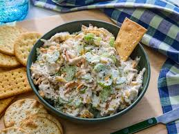

Home
Chicken Salad

This chicken salad recipe is the best and a family favorite! I like to use leftover roast chicken or baked chicken breasts that have been sprinkled with basil or rosemary.
Ingredients:
- Blanched slivered almonds
- Mayonnaise
- Ground black pepper
- Chopped, cooked chicken meat
- Chopped celery
Steps:
- Gather all ingredients
- Place almonds in a frying pan. Toast over medium-high heat, shaking frequently. Watch carefully, as they burn easily.
- Mix together mayonnaise, lemon juice, and pepper in a medium bowl.
- Toss with chicken, toasted almonds, and celery.
- Enjoy!
Actual Recipe